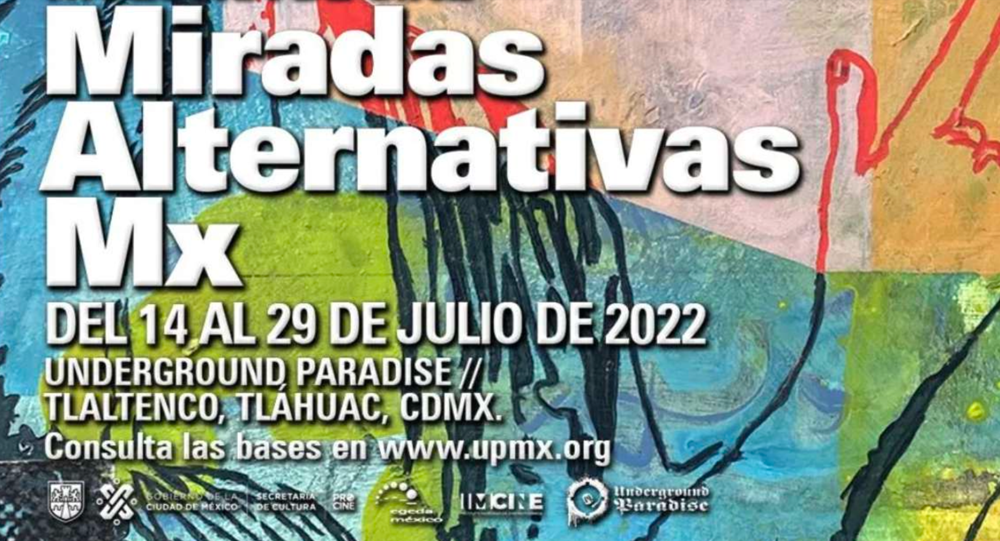
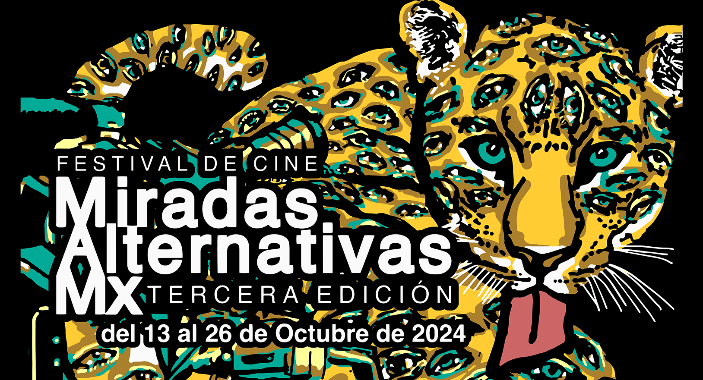

La primera edición del festival se llevó a cabo del 14 al 29 de julio del 2022. Se proyectaron 17 películas, distribuidas en 4 programas y 2 sedes. Además, se realizó una segunda corrida en FARO Tláhuac (del 9 al 23 de febrero 2023).

La segunda edición tuvo lugar en 7 sedes diferentes y se llevó a cabo en las fechas del 16 al 24 de noviembre del 2024. Se proyectaron 27 películas en 6 programas diferentes.

Después de dos ediciones fomentando la imaginación y la creatividad en el suroriente de la Ciudad de México, regresa el Festival de Cine Miradas Alternativas Mx 2024. Este año, el festival se destaca por su compromiso con la exhibición de cine mexicano y latinoamericano, centrándose en propuestas contemporáneas que exploran la rica diversidad cultural e identitaria de la sociedad mexicana. Con una selección de piezas realizadas bajo diversas técnicas, Miradas Alternativas Mx, tercera edición, promete ser un escaparate vibrante de la innovación cinematográfica, ofreciendo una plataforma única para miradas emergentes y establecidas en el cine latinoamericano.
